有限自动机
的互相转换

① P49：NFA转DFA
T：不变
Q及：从NFA的初始状态开始，将某个状态q接受某个字符x所可能转移到的状态合并到一个状态中，作为DFA的Q中一个新状态，这个转移规则作为的一项
F：构造完上述步骤之后，遍历DFA的Q，只要含有NFA的F中任意一个的状态，都是DFA的F
如：经a可能得，经b得，则构造状态、加入到DFA的状态。然后再对中的两个状态分别使用字符a进行推断，将得到的状态如放在一起作为一个新的状态。如此循环，直至不再出现新的状态。而NFA的终结状态为，则只要含有状态，就是DFA的终结状态
例：

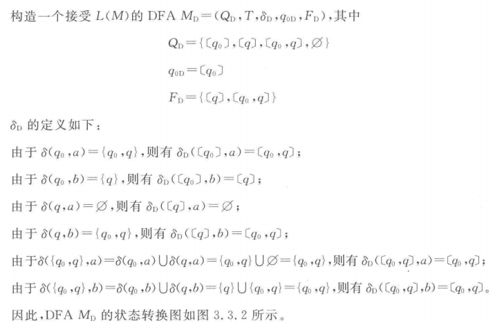

② P54：转NFA
: 若的闭包包含了原本F里的任意状态，则为 F并，否则就是原本的F
Q、T、：不变
：重点。
对于某一条转换规则，
-
（在原先的-NFA中）先去寻找的，
-
然后对这个闭包里的每一个状态都输入字符a（有可能某个状态不接受a，那么它的转换结果就是空集，不写出来），
-
再把得到的这个状态集里的每一个状态都求一遍，结果取并集，
-
然后对原先所有的都走如上的流程，就得到新的。
更直观的描述就是把不接受任何字符就能达到的状态作为起始（取第一个），然后用他去接收字符a（推一步），然后把结果状态及其空转换的状态作为结果（取第二个）
例：
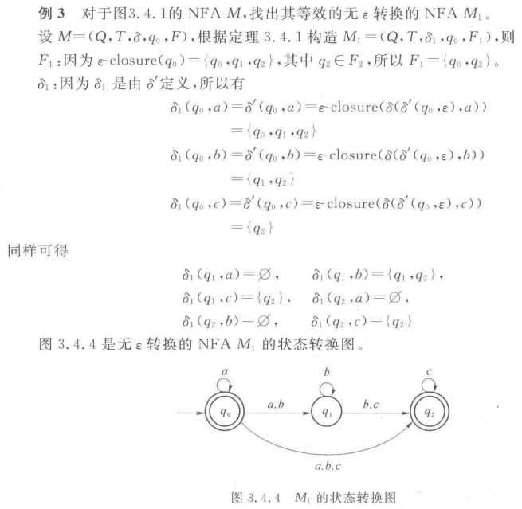
③ P60：RE转NFA
根据如下三种规则构造即可
- 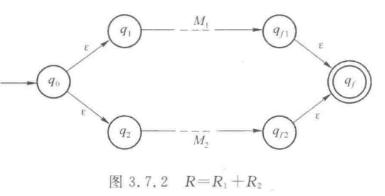
- 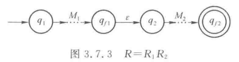

值得一提的是，此处图中构造的是，如果不特别要求的话，完全可以直接构造NFA，此时还能大大化简上图（比如，可以只有的两部分）
④ P62：DFA构造正则式
首先对于每一个终态q，化简初态到q的路径上的状态（这里只关注到特定q的路径，路上的某个状态是不是可以去另外的某个终态是不关心的，可以当它那条边不存在）
将③中的规则逆过来即可
概括性的，如（糊了，是左上角的到右上角的状态）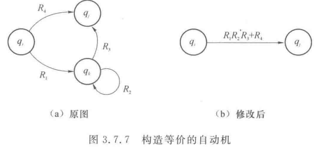
化简到类似下图（a）的形式，套公式构造即可

- 形如（a）的，表示为
- 形如（b）的，表示为
至此，以上四者的相互转换就完成了，一些没有列出的途径可以多用几次上述来间接的完成，比如从NFA得到一个正则式，可以先走①变成DFA，然后走④变成正则式——当然，如果熟练也可以直接完成转换，这里是纯粹只用书上讲过的方法来完成
加入文法的转换
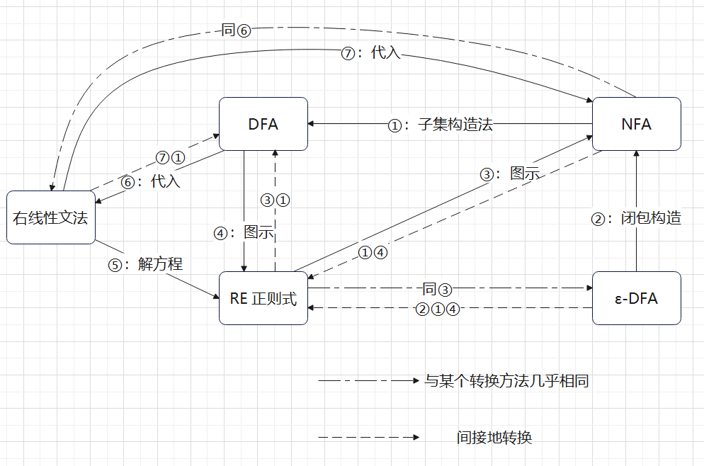
⑤ P56：右线性文法转RE
直接带入公式即可
唯一需要注意的一点是，一定要，不要看到就直接带入公式了。得要都是相同的非终结符，不能一个是S一个是A，那样子的不能用这个。另外注意的定义
例：

⑥ P63-64： 右线性文法转NFA
如图即可
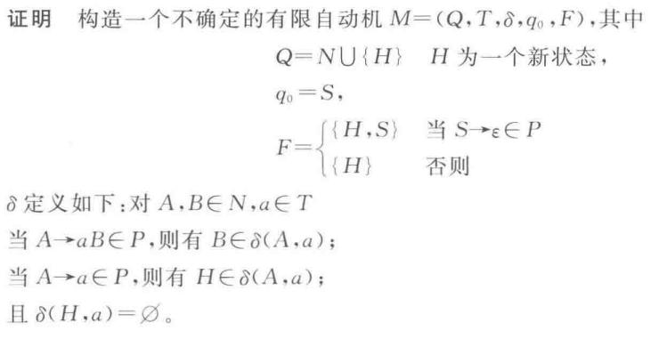
⑦ P65：DFA转右线性文法
终结符T：字母表T
非终结符N：状态集Q
初始字符S：初始状态
生成式P：如下
此外，根据文法会不会有，可能结果会不一样，但是可以推出空串的往往更简洁
至此，3.8节及之前可以构建成系统的内容就概括完了
其他内容
暂 略
泵浦引理

例：
自动机的最小化：填表法
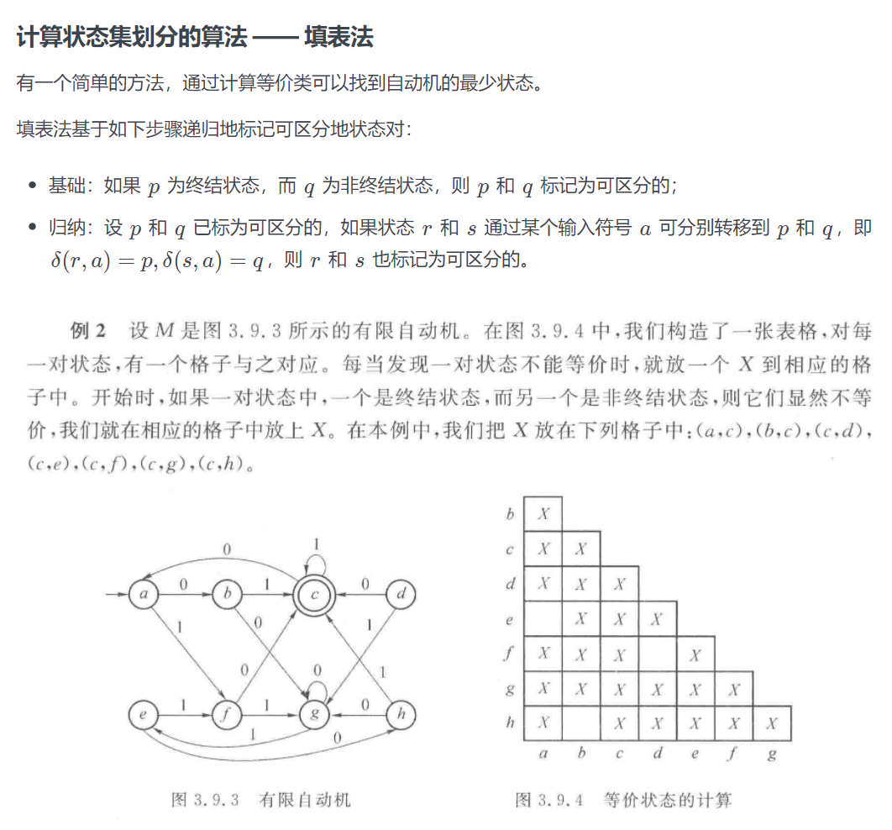首先在终结状态和非终结状态的状态对应的格子里标X，他们显然可以区分。
其次，如果两个状态同时通过一个符号（比如a）可以走到一对可区分的状态上，那么也标上X。
如果他们走到的状态不是已知可区分的，就记录下来，直到填完整个标，如果还是不能断定他们可区分，那就是不可区分的，合为一个状态。注意，这个过程中，记录下来他们通过每一个符号（a、b、c……）走到的一对状态，其中任意一对可区分就认为他们也可区分
米兰机与摩尔机
下推自动机
- 最左/最右推导：每次将最左/右的非终结符进行一次推导
- 二义性：同一个字符串可以由两颗不同但边缘相同（从左到右叶子结点相同）的树得出
上下文无关文法CFL的变换
1、消除无用符号
- 找出有用非终结符：找出所有能直接或间接推出终结符串的非终结符作为有用符号
- 找出有用符号：找出所有从S直接或间接可达的符号（包括终结符和非终结符）作为有用符号
例：

（注意，如第一题，C不能推出终结符，所以后面从S出发的时候，含有C的式子都直接扔掉）
2、消除生成式
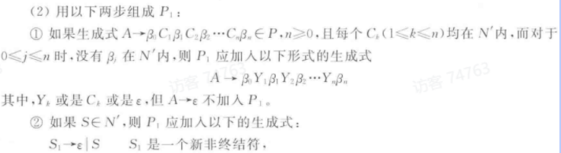
即，若，则枚举ABC中可能为的元素为的情况。即，若ABC都有可能推出空，那就枚举均不为空、A为空、b为空……AB为空……ABC为空（如果都为空的情况下是就不写出来了）的8种情况
且，如果S也可以推出，就加入一个作为起始符，并特别写明它可以推出原S或
例：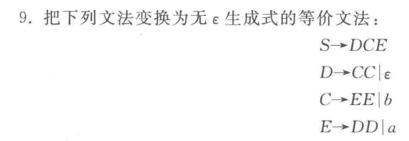
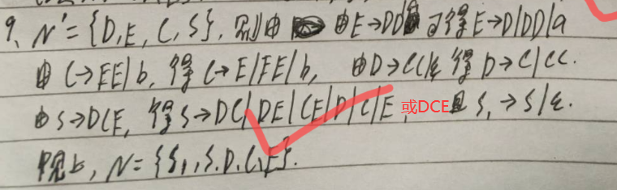
3、消除单生成式

但是讲的不是很好用
速通：对于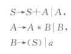，S可以推出A，是一个单生成式，那就把A带入，得到，现在S推出B还是，继续带入，得到
对于循环的问题，如
S可以推出，它们也都可以再推出S。所以将S可以推出非终结符的集合记作，其中的非终结符的非单生成式结果才是S可以推出的结果（即如果里有单生成式，不填给S）
4、消除左递归
省流：
-
非终结符排序：若A推出的式子里，第一个符号有B，那B排在A的后面。下一步时先从最后面的开始变换，然后带回到前面的式子里再变换

-
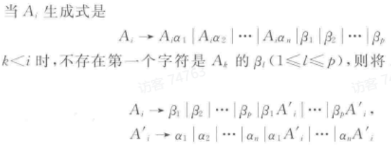 即，将原本的非左递归式取出来保留在A的生成式，然后将他们的每一个再写作，而A'是将原本左递归的一项变成两项：删除左递归的A，和将这个A移到后面 的两个生成式。 即：

或

（A3A4A5不包含A2，所以和b同样地位处理）
使用顺序：先消，再消单生成式，再消无用符号
CNF范式的转换

用上面三步跑完，然后把长度大于2的生成式两个一分即可（注意，A推出aa这种式子要写成A推出BB，B推出a才行）
例：

GNF范式的转换

即，在前三个算法之后，再消除左递归，带入使其符合上面概念
下推自动机
定义
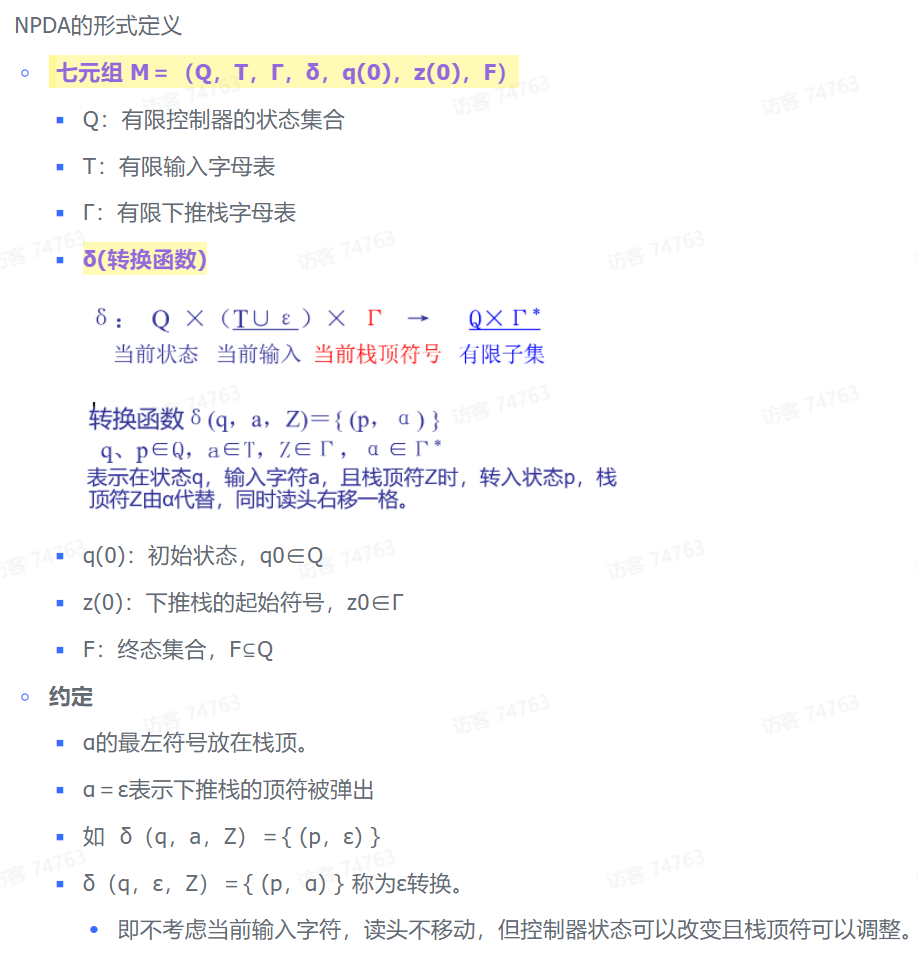

表示在状态q，读入a，栈顶为Z时，转成状态p，栈顶变为r。等价于的格局推导。

终态接受必然可以变成空栈接受
CFL转PDA
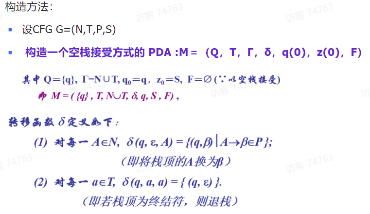
即，将每一个非终结符X推导出都写成一条边；将每个终结符都写一个可以抵消的转移边()。
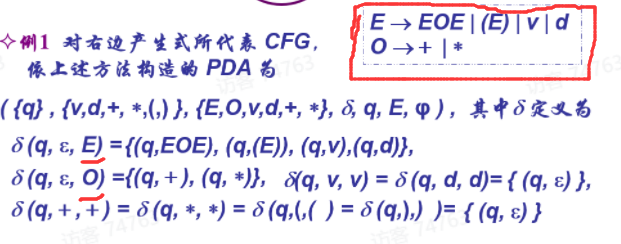
或：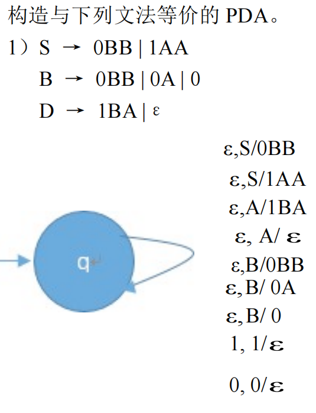
PDA的边，即：状态q到状态p的边上，，表示：。即状态q，读入a，栈顶就从B变为。
CFL的泵浦引理

- 取一常数p，构造一个特殊的语言L的字符串长度大于p，且可以切分，分出来的结果中，长度，非空
- 讨论的位置的情况，证明：存在一个特定的字符串中，在所有位置的情况都不能满足重复任意次仍属于语言L（或者无关位置的话就证明长度之类的，这种不用分类讨论）
例：

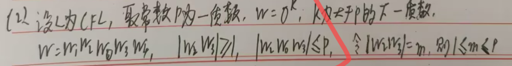

或

（这里关键是构造x为特殊的形态：，只要这一个不满足引理就可以说明他不是CFL了）
图灵机
定义

用描述图灵机的瞬间工作状态，表示读写头正扫描w2的最左字符

即表示读头如果在状态q时读到Xi，那么将Xi修改为Y，并且状态变为p，同时读头左移一格（R就是右移）
例题
1、

自动机图中，的边上写或表示“若读头在状态q0读入了a，就在a的地方写上X，然后右移一格，状态变为q1”，即
2、

对于这种，思想就是0读一个，改写为X；然后右移把1读一个，改写Y；然后右移把2读一个，改写Z；然后一直移到左边，读一个0，循环。最后没0了，就跑到最右边，看是不是B（即为空），是B就能接受（能停机）。